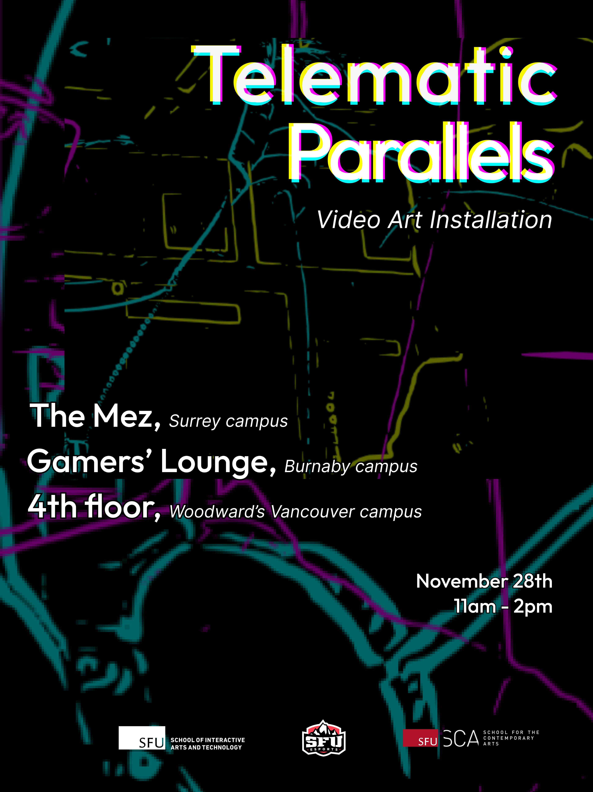

Event Details
Date: Friday, November 28
Time: 11:00 AM - 2:00 PM
Locations: SFU Surrey Mezzanine, SFU Burnaby Gamers' Lounge, and SFU Woodward's 4th floor
Telematic Parallels is a site-specific interactive video installation linking remote locations with shared purpose. Three live video feeds connect the Surrey, Burnaby, and Woodward's campuses into a singular tableau, highlighting the sense of a shared student experience across our geographical distances.
Using hand tracking and simple gestures, participants at each campus contribute to a collaborative visual arrangement. Every motion becomes part of a linked system, allowing students to co-create a moment of presence that flows between buildings, cities, and communities.
This interactive video installation is developed by Mackenzie Scholz and Triane Tambay for IAT 443 Senior Project in Creative Media as their capstone project. Telematic Parallels began as a proof of concept for a directed study during the summer of 2024. The first interaction explored networking across multi location installation sites, hand tracking technologies and interaction design. Expanding on their initial demo, Telematic Parallels will now be installed across three municipalities to unite the Surrey, Burnaby and Woodwards campuses together.
